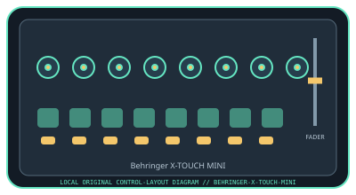

[ SPECIALIZED INPUT CONTROLLERS // IDENTIFIED COMPONENT ]
Behringer X-TOUCH MINI
Two-layer USB MIDI control surface with push encoders, LED rings, and illuminated buttons.

MODEL IDENTIFICATION: X-TOUCH MINI (manufacturer model code: P0B3M; current product reference: 0808-AAF). Confirm the full label, revision, region, included accessories, and software generation against the physical unit before use.
Model specifications
| Catalog leaf | Specialized input controllers |
|---|---|
| Exact model / identifier | X-TOUCH MINI (manufacturer model code: P0B3M; current product reference: 0808-AAF) |
| Control inputs / sensors | Eight rotary controls with LED collars, a 60 mm master fader, 16 illuminated buttons, and dual-layer operation. Knobs and fader are continuous controls; buttons are discrete inputs. The manufacturer describes Mackie Control emulation; verify mode and mapping in the manual. |
| Connection / protocol | USB Type-B, USB bus-powered MIDI controller; MIDI/control data only, with no audio interface. MIDI mode and host mapping determine the messages and response. |
| Driver, software, and host compatibility | Supports MIDI-mappable music and creative applications. Behringer’s downloadable editor/configuration software can customize control behavior; the manufacturer says USB connection is driver-free for Mac/PC. Host mapping and supported OS versions depend on current application/editor versions. |
| Setup / calibration | Connect USB, select the controller in the application, and choose the appropriate layer/MIDI mode. Assign and test encoder rotation, encoder push, and buttons independently; confirm the LED-ring feedback mapping. No analog sensor calibration is required; verify fader endpoints, encoder values, LED feedback, and both layers in the host. Install configuration software only from Behringer’s official downloads. |
Safety and preservation
Do not push or twist encoders sideways or force their detents. Keep liquids away from buttons and USB connector, and disconnect power before cleaning. Use a stable surface and protect the cable from strain.
Record observed condition, host OS, application/driver version, firmware, accessories, and test conditions separately from manufacturer claims.
Primary manufacturer sources
- Behringer X-TOUCH MINI product pageManufacturer product specification and control layout.
- Behringer X-TOUCH MINI Quick Start GuideManufacturer software, documentation, and model-specific compatibility downloads. Original page is gone; this is the Internet Archive’s copy.
Specifications and software support can change by revision and host OS. Verify the exact unit and applicable manual before service or deployment.